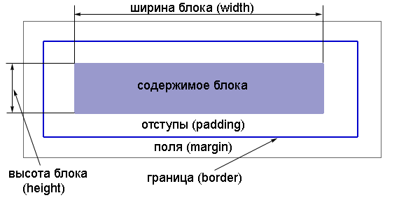
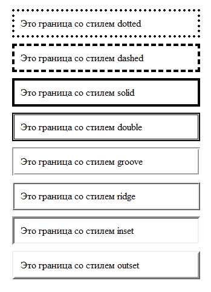

Все элементы делятся на 2 типа: блочные и строчные.
Блочные - визуально создают саостоятельную структурную единицу - БЛОК. Отделяются от других абзацными отступами. Можно отнести: h1-h6, p, div
Строчные элементы выводятся отдельной строкой. Можно отнести: i, b, s, и т.д.
Блок имеет прямоугольную форму:

Структура блока:
содержимое - например для элемента р - это текст
отступ (padding) - вокруг содержимого, служат для того что бы текст не примыкал вплотную к границе блока
граница блока (border) - может быть видимой и невидимой.
поля (margin) - задают дополнительное свобоное пространство вокруг блока. Фон полей прозрачный - т.е. сквозь него просвечивается фон родительского элемента
размеры блока (width/height) - только для содежимого! ВАЖНО! поля и отступы не учитываются в размеры блока!
Задаю всё в CSS, поскольку будет ещё и следующий урок тут - задам класс для абзаца:
p.lesson8{
border:1px solid red; - увидеть отступы, поля и границы
padding:10px;
margin:50px;
width:100px;
height:50px;
}
Для примера создам
Эти 2 параграфа
Это и есть основы блочной верстки сайта!
Урок 9 margin, padding, border
Сегодняшний урок - на примерах элементов DIV и SPAN:
div - это элемент-еонтейнер для остальных. Отделяется от остальных абзацными отступами
span - этот элемент оздаёт строчный блок
Пример (на нём буду рассматривать свойства блоков):
Это текст в тегах div с id=first
Это текст в тегах div с id=third
Это текст в тегах div с id=fourth
Border
Границы можно задавать отдельно для каждой стороны:
border-top - верхняя граница
border-right - правая граница
border-bottom - нижняя граница
border-left - левая граница
Каждый сегмент может иметь свои характеристики: цвет, толщину тип линии. Для этого к свойству границы границы надо через дефис дописать: -color, -width, -style сответственно. Например:
border-top-color
border-right-width
border-bottom-style
Если все четыре границы имеют одинаковые значения - пишем сокращённо:
border-color - цвет всех границ
border-width - ширина всех границ
border-style - стиль всех границ
Значения color: именные/шестнадцатиричные/десятичные RGB
Значения width: thin/medium/thick а так же любая единица измерения
Значения style:
none - граница отсутствует
dotted - граница состоит из точек
dashed - граница в виде пунктирной линии
solid - граница отображается сплошной линией
double - граница отображается двойной сплошной линией
groove - граница отображается вдавленной объемной линией
ridge - граница отображается выпуклой объемной линией
inset - граница отображается так, что весь блок выглядит вдавленным
outset - граница отображается так, что весь блок выглядит выпуклым

Задаю первому блоку разные границы, что б потренироватся(потом удалю что б продолжить урок):
Чаще всего используют сокращнную запись для всех границ: для этого надо задать через пробел : толщина тип цвет - только в таком порядке.
Вот и убью я щас все свои опыты - задам всем div обычные границы красного цвета:
Поля задают свободное пространство вокруг элемента. Как и границы, можно задавать отдельно любую сторону поля:
margin-top - ширина верхнего поля
margin-right - ширина правого поля
margin-bottom - ширина нижнего поля
margin-left - ширина левого поля
Чаще используют сокращённую запись:
p{
margin: 5px 10px 15px 10px
}
Порядок: верх/право/низ/лево (по часовой стрелке)
p{
margin: 5px 10px
}
Порядок: верх/низ=5рх, лево/право=10рх.
p{
margin:5px
}
Толщина всех полей будет равна 5рх.
Значения полей можно задавать в единицах длинны и в %. Так же величина значения может принимать отрицательное значение - что очень удобно иногда!
Теперь задам всем своим примерам толщину полей в 10рх - станет понятно, почему 3й и 4й спрятаны во второй:
На данном этапе в примере, текст прижат к границам - надо бы использовать отступы (padding)
Padding (отступы):
Отступы позволяют отделить содержимое блока от его границы. Параметры отступов можно задать для каждой из сторон:
padding-top - ширина верхнего отступа
padding-right - ширина правого отступа
padding-bottom - ширина нижнего отступа
padding-left - ширина левого отступа
Значения только положительные и можно задавать в единицах измерения или в % (% вычисляются от ширины блока).
Удобней использовать сокращённую запись , которая аналогична сокращённой записи для полей:
Задам размеры своим параграфам! Внимание! В разных браузера - по разному учитываются размеры: в IE в размеры не учитываются поля и отступы!
Поэтому с размерами всегда оккуратно!
Помни, что все элементы легко комбинируются между собой! Можно запихнуть псевдоэлементы и псевдоклассы в эти div! Можно применять любые свойства текстов и шрифтов в эти же div!
Я чуть поигрался с параграфами - они теперь пёстрые.